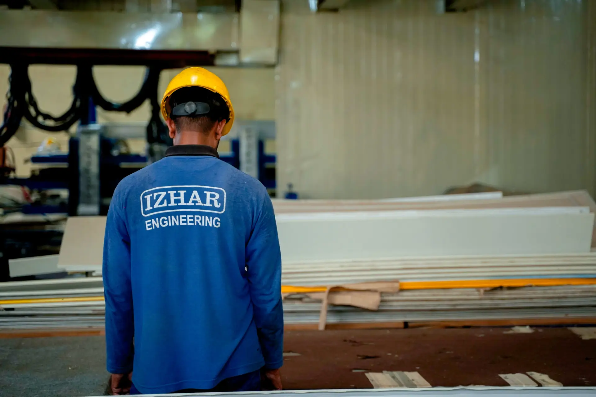

Gourmet Foods Lahore — five-stage IQF ice cream plant with glycol-ammonia refrigeration and −35°C hardening tunnel
Izhar Foster engineered the full refrigeration and cold-storage infrastructure for Gourmet Foods' ice cream manufacturing plant in Lahore — one of Pakistan's most complex food-manufacturing refrigeration projects, spanning five sequential temperature stages from pasteurisation support at +85°C through IQF hardening at −35°C and hardened product storage at −28°C. A glycol secondary loop keeps ammonia entirely out of the food zone.

Ice cream manufacturing is among the most refrigeration-intensive disciplines in the food industry. The product moves through a cascade of precisely controlled temperature stages, each demanding a different refrigeration regime. Fail at any one of them — hold the mix too warm, draw it from the freezer barrel at the wrong temperature, stall it in the tunnel before it is fully hardened — and the product is lost. Gourmet Foods, Pakistan's largest bakery-dairy conglomerate, cannot afford that on a line supplying over 250 retail outlets and an export market that includes London and New York.
The refrigeration infrastructure Izhar Foster delivered for the Gourmet Foods Lahore ice cream plant covers the entire production sequence: from the ageing tanks at +4°C through the continuous-freezer barrel, into the IQF hardening tunnel at −35°C evaporator temperature, and on to hardened product storage at −28°C. The architecture is a glycol-ammonia hybrid — ammonia as the primary refrigerant for thermodynamic efficiency at low temperatures, glycol as the secondary loop that creates the hygiene barrier in the food-contact zone.
The five-stage production refrigeration sequence
Understanding why Gourmet Foods' refrigeration system is complex requires tracing what happens to ice cream mix between raw ingredients and the dispatch dock.
Stage 1 — Pasteurisation (+85°C). The ice cream mix — milk fat, skim milk solids, sugar, stabilisers, emulsifiers, and flavourings — is pasteurised at +85°C for 15–25 seconds in a plate heat exchanger. At this stage, refrigeration's job is recovery: rapid pre-cooling of the pasteurised mix begins the moment it leaves the pasteuriser, preventing bacterial re-growth during transfer to the ageing tank. A portion of the glycol circuit is configured to accept this thermal load.
Stage 2 — Ageing (+4°C). The cooled mix enters insulated stainless-steel ageing tanks held at +2 to +4°C for a minimum of four hours. This ageing step is critical: it allows milk fat to partially crystallise, which improves the ice cream's body and texture. The glycol secondary loop services these tanks at a flow temperature of around +1°C — cold enough to hold setpoint but never dropping below zero, which would freeze the mix in the tank walls. Temperature uniformity across the tank volume matters; stratification of even 1–2 K is enough to produce inconsistent draw viscosity.
Stage 3 — Continuous freezer (−5°C draw temperature, glycol-cooled barrel). Mix from the ageing tank is pumped into the continuous freezer — a scraped-surface heat exchanger that churns air into the mix while chilling the barrel from outside. The draw temperature at the barrel outlet is typically −5 to −6°C: the mix is partially frozen, aerated to the target overrun (volume of air incorporated), and of the right viscosity to be deposited into moulds or extruded as a log. The barrel jacket is chilled by the glycol circuit, which here runs at approximately −10 to −12°C flow temperature. Ammonia never enters the food-processing building.
Stage 4 — IQF hardening tunnel (−35°C evaporator). The deposited or extruded ice cream — still at around −5°C in core temperature — enters the IQF hardening tunnel. The tunnel must drive the product core to −18°C or below in the time it takes to traverse the belt, typically 15 to 25 minutes depending on product geometry. To achieve this throughput in a Lahore ambient of up to 45°C summer conditions, the tunnel evaporator operates at −35°C. At this temperature, the ammonia plant is running at very low suction pressure: for NH₃, −35°C corresponds to approximately 1.2 bara suction, which on a single-stage screw compressor gives a pressure ratio that starts to compromise efficiency and volumetric performance. The correct engineering answer at this combination of evaporating temperature and Lahore ambient condensing temperature — which can reach +52 to +55°C at the condenser coil in summer — is either two-stage compression or a booster-main cascade arrangement. Izhar Foster's refrigeration engineering team evaluated both options and sized accordingly.
Stage 5 — Hardened product storage (−28°C). Fully hardened ice cream exits the tunnel and is transferred directly into the hardened product store, where FireSafe PIR-insulated walls and ceiling hold −28°C. This is the long-term holding environment: product may reside here for days or weeks before dispatch. At −28°C, ice crystal growth (recrystallisation) is suppressed to the point where product texture is stable throughout a well-managed distribution chain.

Why glycol-ammonia, and why the architecture matters
The choice of glycol-ammonia is not a preference — it is an engineering and regulatory necessity in dairy food processing.
Ammonia is toxic. At concentrations above 300 ppm it poses an immediate health hazard; at concentrations above 15% in air it is flammable. A direct-expansion ammonia circuit that penetrates the food-processing building — bringing high-pressure liquid NH₃ within metres of open product — is unacceptable under PSQCA dairy standards, international food safety audit regimes (BRC Global Standard, FSSC 22000), and, critically, under the export market requirements that Gourmet Foods' London and New York sales channels impose.
The glycol secondary loop eliminates this risk entirely. Ammonia is confined to the plant room, which is ventilated, gas-detected, and interlocked to shut down automatically on any leak signal. Glycol — food-grade propylene glycol where required by audit — is the working fluid in the food zone. A plate heat exchanger in the plant room transfers the refrigerant effect from the ammonia to the glycol. The glycol circuit then runs piped to the ageing tanks, the barrel jacket, and (in a separate high-temperature-differential circuit) to the tunnel coils.
The engineering complication of a glycol secondary is the additional temperature difference introduced at the plate heat exchanger. If the glycol circuit must deliver −10°C to the barrel jacket, the ammonia must evaporate at roughly −15 to −18°C to achieve the necessary driving temperature difference across the plate. At −35°C tunnel coil temperature, the glycol circuit that feeds the tunnel must run at approximately −40°C, and the ammonia must evaporate at −45°C or below — deep enough that two-stage compression becomes mandatory, not optional.

Hot-gas defrost, production scheduling, and Lahore ambient
The IQF hardening tunnel presents one of the most technically demanding defrost problems in food refrigeration. Evaporator coils at −35°C accumulate frost at a rate directly proportional to product throughput and the moisture content of the incoming air at tunnel entry. In continuous production, the coil face can become significantly bridged with frost within a single shift.
Electric defrost — the simplest approach — is disqualifying for a hardening tunnel of any scale: the heater wattage required to clear heavily frosted coils of this size produces significant thermal inertia, taking the tunnel well above −18°C during the defrost cycle and requiring extended pull-down time before product can re-enter. That dead time is production lost.
Hot-gas defrost uses the compressor discharge gas — already superheated at the compressor outlet — and diverts it directly into the evaporator coil circuits. The coil is heated from inside by high-pressure hot gas rather than from outside by electric elements. Defrost time drops to 15–25 minutes, and thermal overshoot of the tunnel structure is dramatically reduced. The circuit design requires pressure-relief valves, reverse-check arrangements, and careful sequencing logic to prevent liquid migration to the compressor during hot-gas admission — all standard on a well-specified industrial refrigeration package, but demanding careful commissioning discipline.
Defrost scheduling for the Gourmet Foods tunnel is integrated with the production shift pattern. Defrosts are timed for shift changeovers and planned line changeovers between flavour batches — periods when the tunnel would need to be cleared anyway. This approach, rather than defrost-on-demand triggered by coil differential pressure alone, keeps planned defrosts coordinated with operations rather than interrupting them unpredictably.
Lahore ambient adds a third constraint. On a summer day, the condenser side of the refrigeration plant is rejecting heat to air at 45–48°C. Every refrigeration plant in Pakistan's climate must be sized for this reality. Izhar Foster applies ASHRAE 0.4% design dry-bulb for Lahore — approximately 45°C — with an additional derate of 2.7%/K above 35°C on low-temperature applications. The practical effect is that the condensing plant must be significantly larger than a European or North American specification for the same evaporating load, and the compressor selection must account for the elevated discharge pressure that a 45°C ambient condenser imposes.

Scope Izhar Foster delivered
The Izhar Foster scope on the Gourmet Foods ice cream plant covered:
- FireSafe PIR cold-store envelope — walls, ceiling, and floor build-up for the hardened product store at −28°C. Panel thickness selected for a calculated U-value consistent with the heat-load budget at −28°C inside and 45°C peak ambient outside. All joints PIR-filled and continuous, no thermal bridges through penetrations.
- Ammonia primary refrigeration plant — two-stage (or booster-main) screw compressor arrangement sized for the −35°C tunnel duty at Lahore summer ambient. Hot-gas defrost circuit engineered into the plant-room design. Ammonia rack positioned in a dedicated ventilated plant room with gas detection, automatic solenoid isolation, and emergency ventilation interlocks.
- Glycol secondary circuits — separate high-temperature (+1 to +4°C) and low-temperature (−40°C) glycol loops. Plate heat exchangers in the plant room. Pump redundancy (duty/standby) on both loops. Glycol concentration calibrated for the design minimum temperature with a 5 K safety margin against freeze-up.
- IQF hardening tunnel integration — evaporator coil design and hot-gas defrost sequencing. Tunnel entry and exit curtains to limit infiltration load during product transfer.
- Insulated cold-store doors at the hardened store interface — high-cycle sliding panels with heated frames, multi-stage perimeter gaskets, and rapid-opening speed to minimise infiltration during forklift transfer of hardened product.
- Controls and monitoring — SCADA-level BMS with temperature logging at every stage, alarm outputs for compressor faults, high-suction temperature, coil defrost overrun, and glycol pump failure.
Specification context — ice cream plant refrigeration in Pakistan
| Stage | Temperature | Refrigerant/medium |
|---|---|---|
| Ageing tank | +2 to +4°C | Glycol secondary (+1°C flow) |
| Continuous freezer barrel | −5 to −6°C draw temp | Glycol secondary (−10 to −12°C) |
| IQF hardening tunnel (evaporator) | −35°C | Glycol secondary (−40°C) / NH₃ primary |
| Hardened product store | −28°C | NH₃ direct expansion, LU-VE-class evaporators |
| Condenser design ambient (Lahore) | 45°C ASHRAE 0.4% | Evaporative or air-cooled condenser |
| Compressor staging | Two-stage or booster-main | Bitzer screw, N+1 arrangement |
| Defrost | Hot-gas, shift-integrated schedule | Discharge bypass to coil |
| Panel envelope (storage) | FireSafe PIR B1 | λ = 0.022 W/m·K |
Why Gourmet Foods chose Izhar Foster
A project of this engineering complexity — five temperature stages, two refrigerant circuits, hot-gas defrost, and a Lahore ambient environment that attacks every condenser in summer — demands a refrigeration contractor who does not simply procure components and assemble them on site. It demands one who can do the compressor selection calculations, the evaporator coil sizing at −35°C, the plate heat exchanger area calculation at both glycol circuit temperatures, the hot-gas defrost circuit pressure analysis, and the building load calculation for the −28°C store, all in-house, and who can service what they install for the 20-year life of the plant.
Izhar Foster's engineering team operates with calculation methodology cross-validated against ASHRAE Refrigeration Handbook, Bitzer Software, Heatcraft NROES, and NIST REFPROP. Our 277,460 sqft Lahore manufacturing complex produces the FireSafe PIR panels in-house. Our refrigeration engineers are resident in Pakistan. Parts for Bitzer compressors and LU-VE evaporators are in-country. That is the proposition Gourmet Foods evaluated — and the one they selected.
If you are scoping an ice cream plant, blast freezer, or IQF tunnel in Pakistan, start with our cold room heat load calculator to get the refrigeration load, then request a quote with your tunnel throughput, product geometry, and target hardening time. Our engineers respond within 24 hours.
Other food and cold-chain projects in Pakistan.
How the Gourmet Foods ice cream plant sits within Izhar Foster's broader food-manufacturing refrigeration portfolio.
Coca-Cola TCCEC Lahore
High-bay finished-goods cold storage for The Coca-Cola Export Corporation's bottling and distribution operation in Lahore — drive-in pallet racking and ammonia refrigeration.
02Beverage · GujranwalaNaubahar Bottling Co.
PIR-clad bottling-plant cold storage for the Pepsi franchise in Gujranwala — food-manufacturing refrigeration serving one of Pakistan's largest beverage operations.
033PL · LahoreEmirates Logistics Lahore
Multi-temperature 3PL cold store with GDP-compliant pharmaceutical zone — frozen, chilled, and ambient-controlled zones within a single PIR envelope.
Questions about IQF ice cream plant refrigeration in Pakistan.
What refrigeration system does an ice cream manufacturing plant need?
Ice cream manufacturing requires a staged refrigeration architecture. Ageing tanks operate at +2 to +4°C to allow fat crystallisation before the mix enters the continuous freezer. The continuous freezer draws mix at roughly −5 to −6°C as it exits the barrel. An IQF hardening tunnel then drops product to its core temperature — typically −18 to −25°C for moulded bars, and as low as −35°C on the tunnel evaporator to achieve the required throughput. Hardened product storage is typically −25 to −28°C. A glycol secondary loop is used in the food-contact zones as a hygiene barrier between the ammonia primary and the food product.
Why is ammonia the preferred refrigerant for IQF ice cream hardening tunnels?
Ammonia (NH₃) is the preferred primary refrigerant for IQF hardening tunnels because its thermodynamic properties at −35 to −40°C evaporating temperatures are far superior to HFC equivalents — COP remains viable where HFCs would demand cascade compression. Combined with ammonia's zero global-warming potential and zero ozone-depletion potential, ammonia is the industrial standard for large-scale ice cream hardening in South Asia. The hygiene concern — ammonia toxicity in a food zone — is resolved by a glycol secondary loop that places ammonia only in the plant room, never in contact with food.
What is a glycol secondary loop in ice cream refrigeration?
A glycol secondary loop uses a chilled glycol solution as the heat-transfer medium between the ammonia primary refrigeration plant and the food-contact equipment. The ammonia chills the glycol in a plate heat exchanger in the plant room; glycol is pumped into the food processing area. This means no ammonia pipework enters the food zone — a critical food-safety requirement in dairy processing. In Pakistan, PSQCA dairy plant standards and export-market food safety audits both require this separation.
How does hot-gas defrost work on an IQF hardening tunnel?
Hot-gas defrost cycles divert discharge gas from the compressor directly into the evaporator coil, melting frost from the inside of the tube rather than switching to electric heaters. Hot-gas defrost is faster (15–25 minutes versus 45–60 for electric), does not interrupt the refrigerant circuit, and imposes lower thermal shock on the evaporator structure. For an ice cream hardening tunnel, defrost scheduling must integrate with the production shift pattern — usually timed for shift breaks and changeovers — to avoid bringing a loaded tunnel off temperature mid-production.
What temperature does hardened ice cream storage operate at?
Hardened ice cream storage operates at −25 to −28°C, consistent with the international standard for long-term frozen dessert storage. In Lahore's climate — where summer ambient can reach 45 to 48°C — maintaining −28°C inside requires a condenser designed for Pakistani ambient conditions. Izhar Foster sizes condensers using ASHRAE 0.4% design dry-bulb for the specific city, with a derate of 2.7%/K above 35°C ambient on low-temperature applications, and a hard-floor minimum of 60% rated capacity for extreme summer peaks.
How large is Gourmet Foods and what does it manufacture?
Gourmet Foods is Pakistan's largest bakery-dairy conglomerate, operating 7 processing units, more than 250 retail outlets across Punjab, and over 10,000 employees, with a presence in London and New York. Product lines include ice cream in 12+ flavours made with real fruit pulp, dairy products, beverages, and a full bakery range. The operation demands industrial-grade refrigeration across multiple temperature regimes — from pasteurisation support down to IQF tunnel hardening at −35°C — within a single integrated facility.
How much would your ice cream plant refrigeration cost?
Rough cost estimate for IQF tunnel refrigeration and −28°C hardened storage in Pakistan. ±20% indicative band — engineer validation required before quoting.
Open the rough estimator →